МУЗЕЙ ВУРМА - НА ГЛАВНУЮ
Все фотографии являются общественным достоянием и могут быть скопированы, изменены, или распространены, с указанием в качестве источника, данного сайта.
Дэмчигдонров - самая невинная фигура среди стран Оси. Что он сделал? Носил всю жизнь одну причёску - бянь-фа, за это он заслужил такую ненависть? Или за то, что он аристократ и всю жизнь
заботился о кочевниках, рабочих и крестьянах? Или за то, что он получил гигантский авторитет и начал строить государство, которое могло бы существовать долгое время, будь бы это время у государства на переустройство.
Но как люди обошлись с человеком, который хотел лишь благополучия и процветания для своего народа? Сына Дэ Вана - Долгорсурэна, пытали до смерти в лагерях МНР, а самого Дэ Вана унизили и выдали в КНР.
Трагическая судьба такого милого, доброго, умного правителя.
Её должны знать все.

Дэмчигдонров на церемонии провозглашения республики Мэнцзян
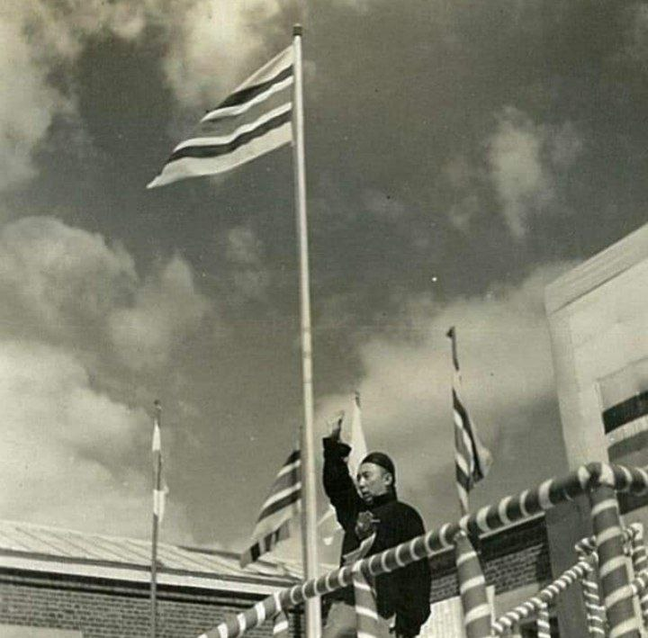
Дэмчигдонров на церемонии провозглашения республики Мэнцзян
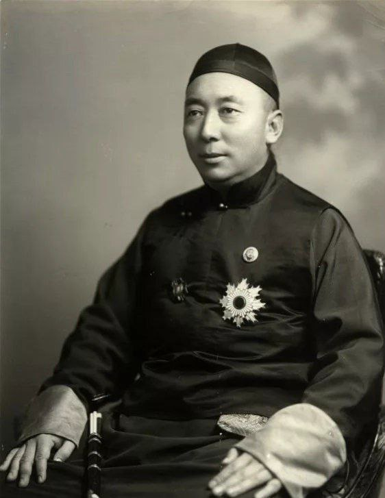
Дэмчигдонров, официальный портрет
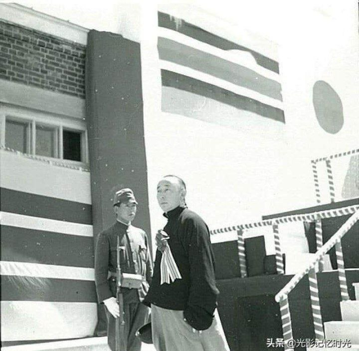
Дэмчигдонров на церемонии провозглашения республики Мэнцзян

Дэмчигдонров здоровается с японскими офицерами на церемонии провозглашения республики Мэнцзян
Дэмчигдонров здоровается с генералом Дзиро Минами
НИЖЕ БУДЕТ ПРИВЕДЁН КОМПЛЕКС ФОТОГРАФИЙ, СДЕЛАННЫХ МИССИОНЕРОМ ДЖОЭЛОМ ЭРИКСОНОМ В 1930-Х. ПОСЛЕ НИХ БУДУТ ОБЫЧНЫЕ, ПОВСЕДНЕВНЫЕ ФОТО ДЭ ВАНА.
Дэмчигдонров, фото Джоэла Эриксона
Редкое фото - Дэмчигдонров и белые. Слева от него - Джоэл Эриксон, справа - Стюарт Ганзель
Дэмчигдонров стреляет из лука, фото Джоэла Эриксона, ниже есть это же фото с ссылкой на видео
Дэмчигдонров, фото Джоэла Эриксона
Дэмчигдонров вылез из машины, фото Джоэла Эриксона
Дэмчигдонров (почти слева) с монголами и охраной, фото Джоэла Эриксона
Дэмчигдонров после охоты вместе с Джоэлом Эриксоном
Дэмчигдонров со своими детьми и с некой женщиной, фото Джоэла Эриксона
Дэмчигдонров со своими детишками, фото Джоэла Эриксона
Дэмчигдонров с женой и детьми ожидает представления, в самом конце данной страницы есть ссылка на видео, фото Джоэла Эриксона

Дэмчигдонров, портрет
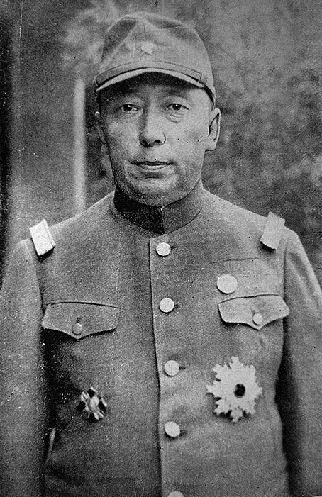
Дэмчигдонров в военной форме японского образца

Дэмчигдонров (слева) и Ли Шоусинь (в центре)

Дэмчигдонров (обведён) на фоне некого самолёта
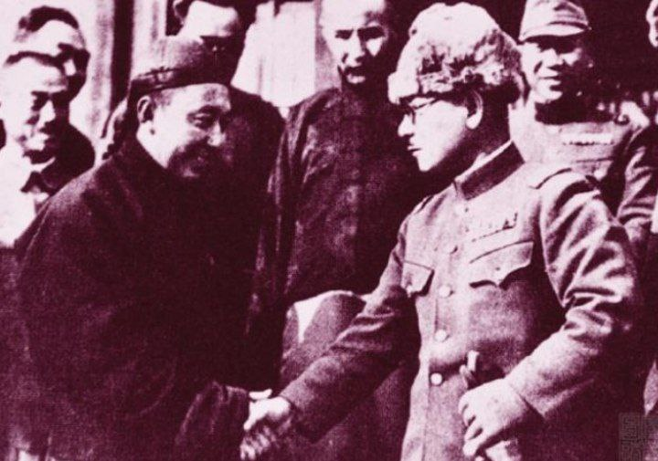
Дэмчигдонров (слева) и некий японский офицер, предположительно, генерал
Дэмчигдонров с неким юношей и другими людьми
Дэмчигдонров куда-то держит путь, провозглашение Республики Мэнцзян
Дэмчигдонров куда-то маришрует, провозглашение республики Мэнцзян
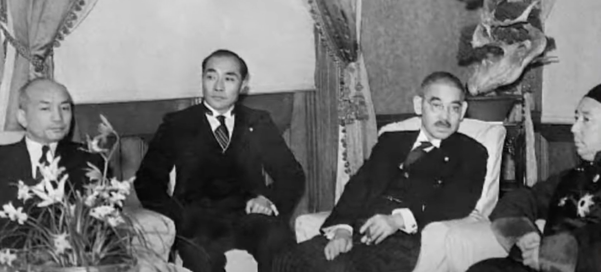
Дэмчигдонров и послы
Дэмчигдонров и послы
Дэмчигдонров и японские офицеры

Дэмчигдонров (в центре) изучает некую карту/документ с японскими офицерами
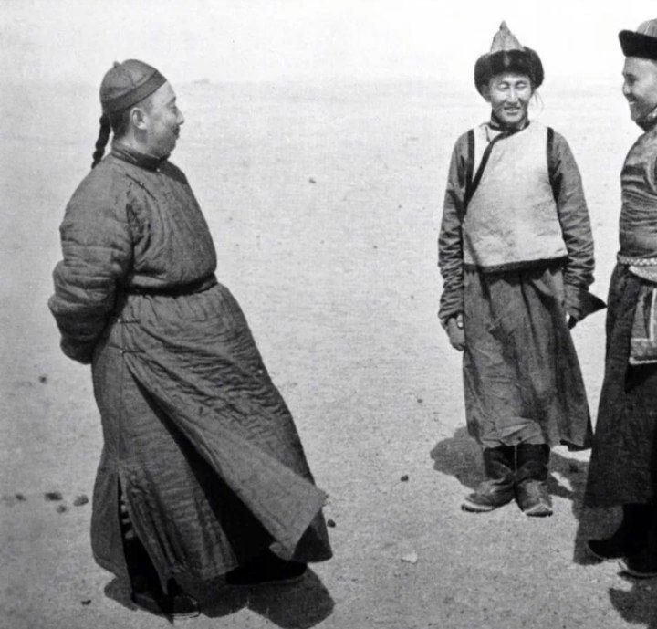
Дэмчигдонров посещает кочевников Мэнцзяна
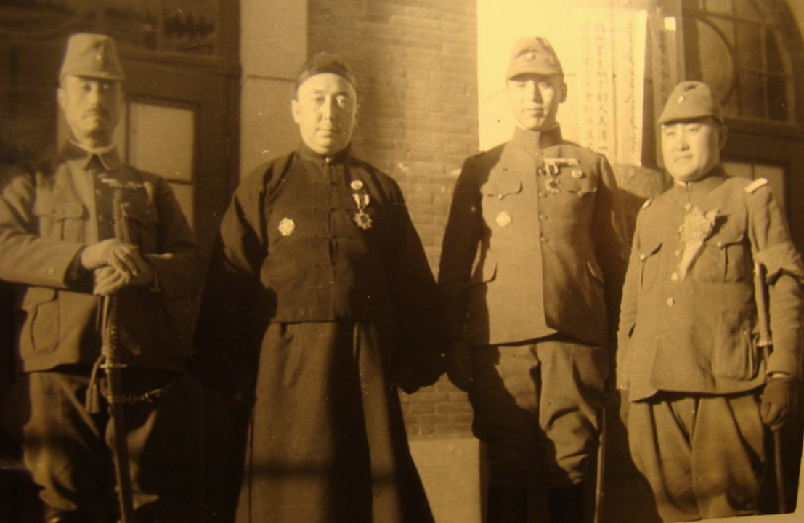
Дэмчигдонров (левее центра) и Ли Шоусинь (правее центра) после второго великого совета Внутренней Монголии
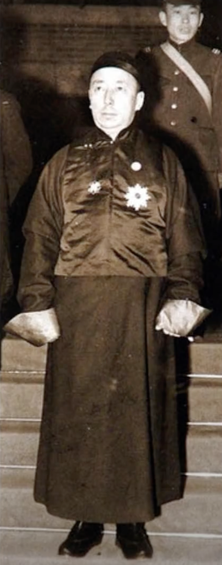
Дэмчигдонров на неопределенном событии

Дэмчигдонров здоровается с японским офицером

Дэмчигдонров в музее рассматривает пулемёт системы Гатлинга
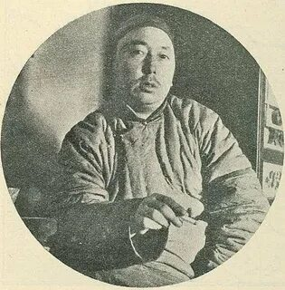
Дэмчигдонров курит
Дэмчигдонров с кем-то оживлённо беседует
Дэмчигдонров спускается
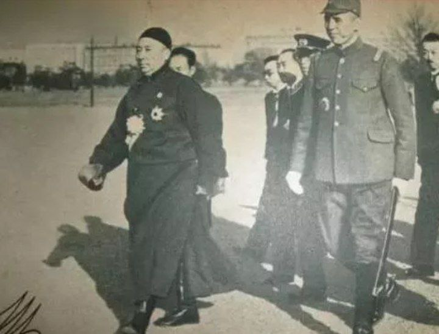
Дэмчигдонров и Ли Шоусинь (справа)

Дэмчигдонров в неком автомобиле

Дэмчигдонров осматривает некую мебель

Дэмчигдонров в костюме монгольского князя
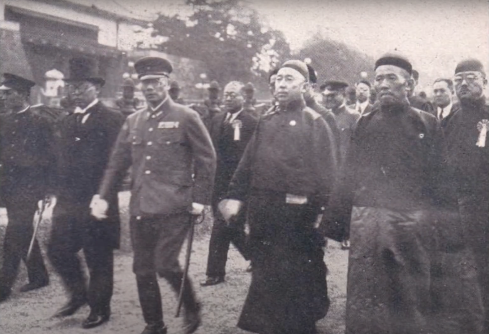
Дэмчигдонров на неком мероприятии
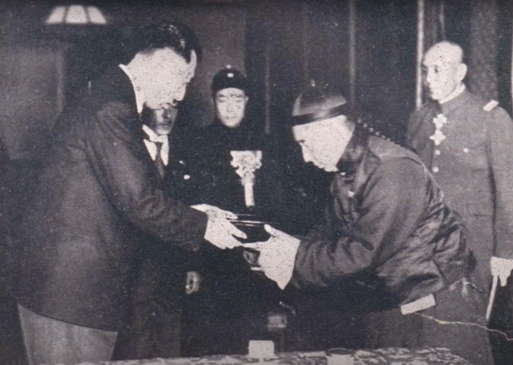
Дэмчигдонров что-то даёт, либо, принимает в дар. Справа - Ли Шоусинь

Дэмчигдонров стреляет из лука. Чтобы посмотреть видео на эту тему, нажмите на этот текст

Дэмчигдонров

Дэмчигдонров в военной форме японского образца

Дэмчигдонров в одежде князя

Дэмчигдонров сидит, возможно, в юрте

Дэмчигдонров

Дэмчигдонров (в центре, первый ряд, снизу) на совете. Справа от него - Ли Шоусинь
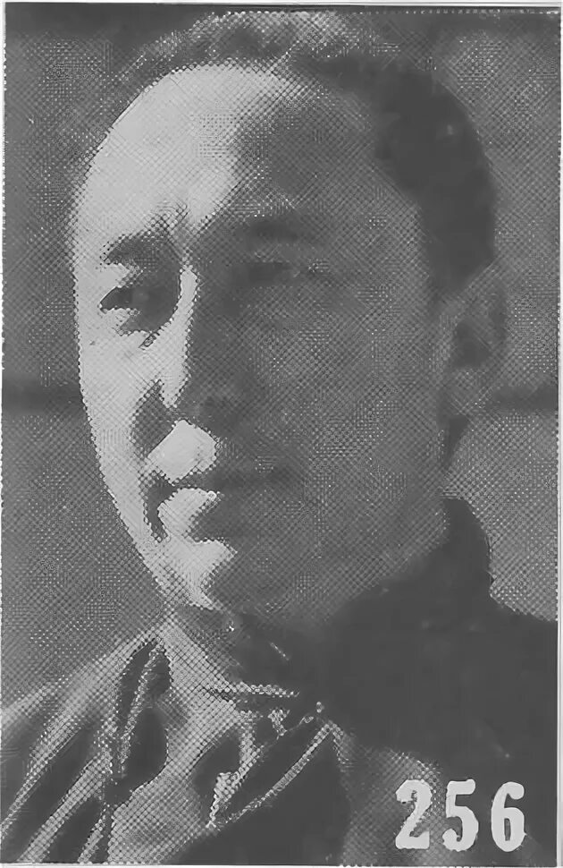
Дэмчигдонров, фото из справочника "кто есть кто в Китае"

Дэмчигдонров и аристократия

Дэмчигдонров-военнопленный

Дэмчигдонров (самый левый) на неком мероприятии. Справа от него - Ли Шоусинь
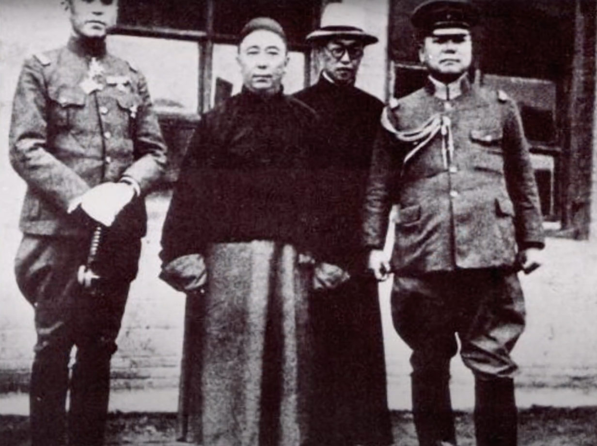
Дэмчигдонров, слева от него - Ли Шоусинь, справа - генерал Дзиро Минами
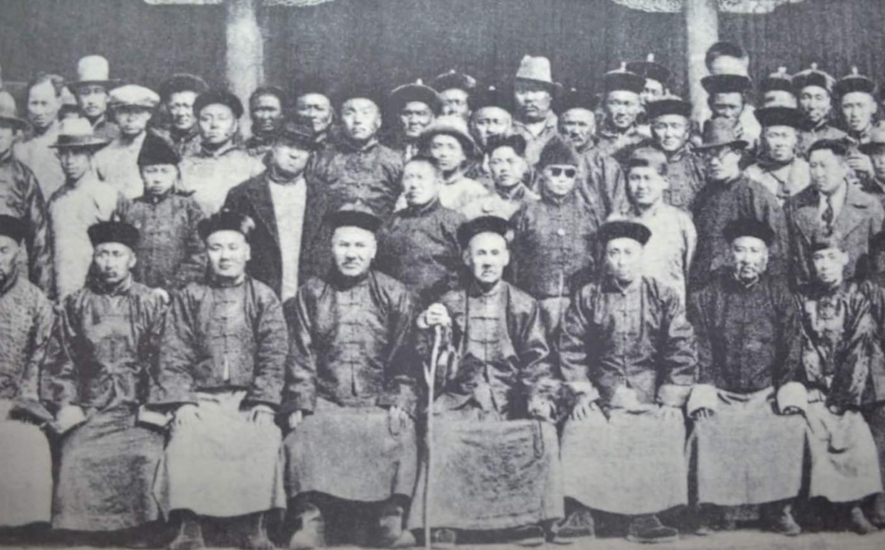
Дэмчигдонров (правее центра) на первом совете князей Внутренней Монголии

Дэмчигдонров, портрет

Дэмчигдонров и аристократия, фото лучше

Дэмчигдонров

Дэмчигдонров уселся
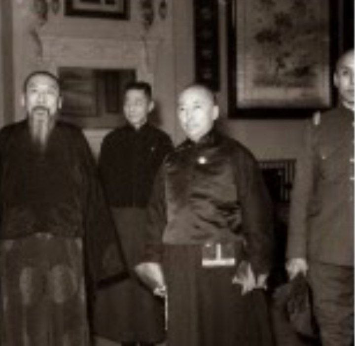
Дэмчигдонров на неком мероприятии
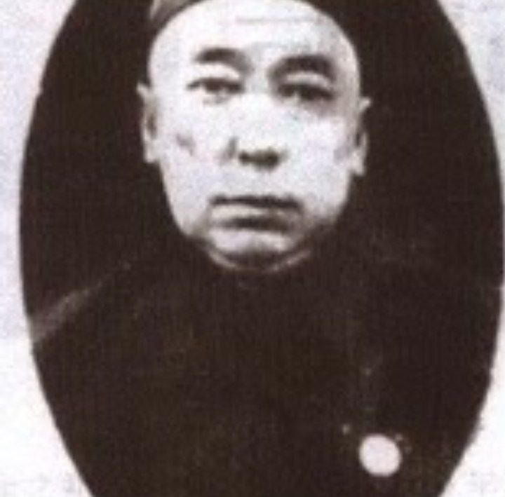
Дэмчигдонров

Дэмчигдонров смотрит представление и курит. Чтобы посмотреть видео на эту тему, нажмите на этот текст
МУЗЕЙ ВУРМА - НА ГЛАВНУЮ